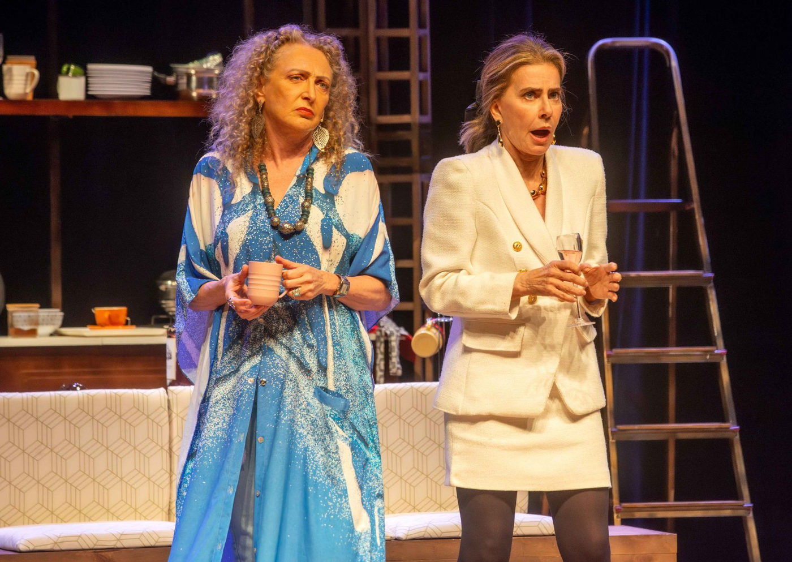

Maitê Proença e Debora Olivieri Estrelam “Duas Irmãs & Um Casamento” no Teatro FAAP

Após o sucesso de estreia no Rio de Janeiro, a comédia “Duas Irmãs & Um Casamento”, do renomado dramaturgo inglês Peter Quilter, chega ao Teatro FAAP, em São Paulo.
A temporada vai de 15 de janeiro a 20 de março de 2025, com sessões às quartas e quintas-feiras às 20h e, a partir de 4 de fevereiro, também às terças, no mesmo horário.
Dirigida por Ernesto Piccolo, a peça é inédita no Brasil e apresenta uma história envolvente que combina humor, emoção e reflexões sobre temas universais como envelhecimento, solidão, laços familiares, sororidade e amor próprio.
Enredo
A trama acompanha o reencontro de duas irmãs na faixa dos 60 anos:
Catarina (Maitê Proença): sofisticada e bem-sucedida, mas marcada por múltiplos divórcios.
Rosa (Debora Olivieri): solteira, independente e com uma visão não convencional da vida.
As duas se reúnem em uma pitoresca casa de campo para organizar um casamento e, ao longo do processo, compartilham memórias, confissões hilárias e momentos de pura nostalgia. Com diálogos afiados e situações cômicas, a peça celebra a vida e desafia estereótipos sobre o envelhecimento e a importância dos laços afetivos.
Sucesso de Crítica e Público
Com humor sarcástico e inteligente, “Duas Irmãs & Um Casamento” conquistou público e crítica, oferecendo uma reflexão leve e emocionante sobre o que realmente importa na vida. A peça é apresentada pelo Ministério da Cultura e Brasilcap, com patrocínio do Laboratório Cristália, via Lei Federal de Incentivo à Cultura.
Peter Quilter é conhecido no Brasil por sucessos como “Duetos”, também dirigido por Ernesto Piccolo, que atraiu mais de 100 mil espectadores em 14 cidades. Internacionalmente, suas obras foram traduzidas para mais de 10 idiomas e encenadas em mais de 20 países.
Serviço
“Duas Irmãs & Um Casamento”
Temporada: 15 de janeiro a 20 de março de 2025
Local: Teatro FAAP – Fundação Armando Alvares Penteado
Endereço: R. Alagoas, 903 – Higienópolis, São Paulo – SP
Sessões:
Quartas e quintas-feiras, às 20h
Terças, a partir de 4 de fevereiro, às 20h
Ingressos: De R$ 39,50 a R$ 120
Vendas: Site oficial do teatro ou bilheteria (Tel.: (11) 3662-7233)
Classificação etária: 12 anos
Duração: 70 minutos
Para mais informações e novidades, acesse as redes sociais do espetáculo: Instagram Oficial.
Não perca a oportunidade de conferir essa comédia emocionante e divertida que promete encantar o público paulista!